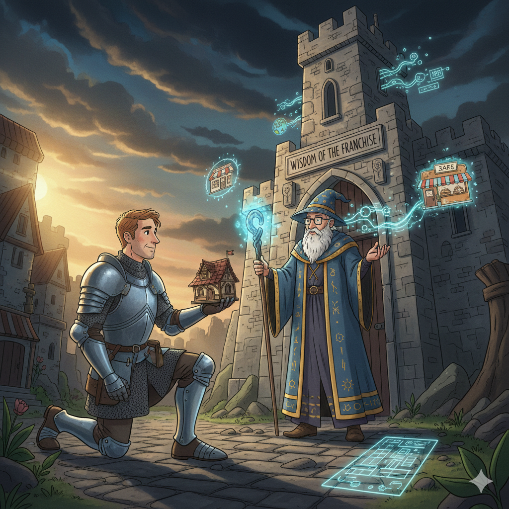
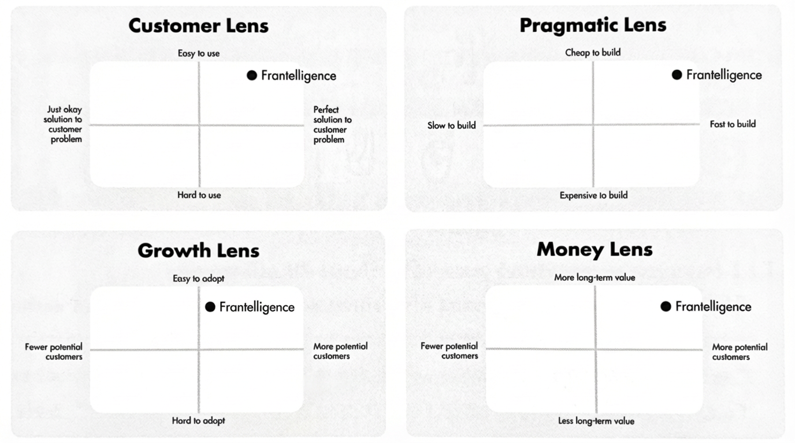
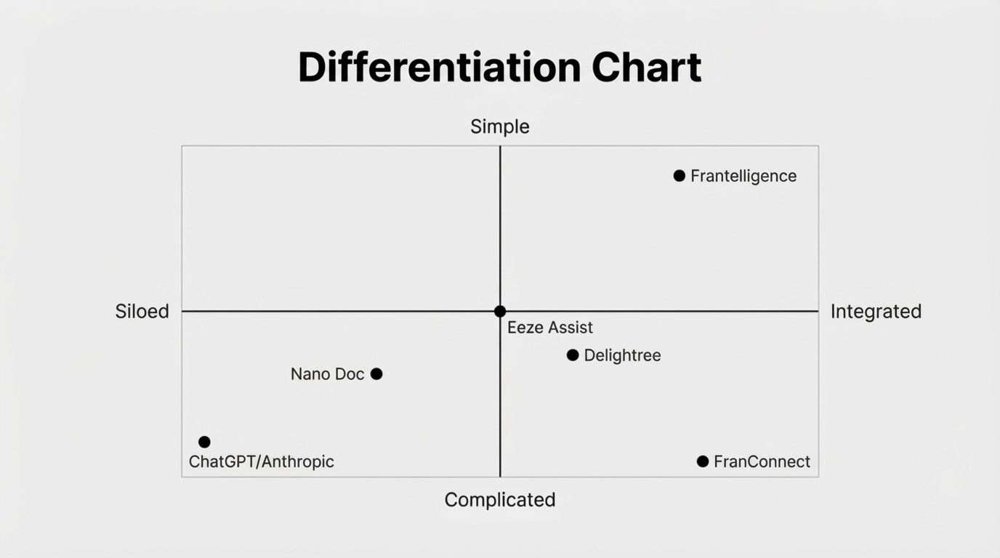
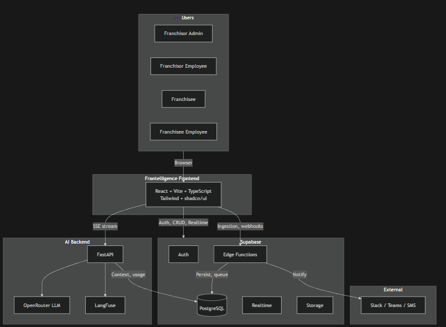

Frantelligence · Midterm Presentation · Feb 2026

"We answer the same questions over and over. There has to be a better way."
Rachel Bridges · VP Operations, Planet Fitness franchise group"Our knowledge is locked in my head. When I'm not available, things fall apart."
Jeff Piejack · Owner, Ultimate Ninjas franchiseFranchise operators will pay for a tool that turns institutional knowledge into a self-updating, always-available answer system.



prd.md defines scope before a line of code is writtenchangelog.md records every decision and its rationalecoding-style.md keeps AI output consistent across sessionsaiDocs/ (PRD, plans) +
ai/ (working files)
.testEnvVars gitignored, example committed
kb_logging.py via structlog
log_entry(log, "ingest_doc", doc_id=doc_id)
log_exit(log, "ingest_doc", chunks=len(chunks))
log_error(log, "ingest_doc", error=e)Questions?